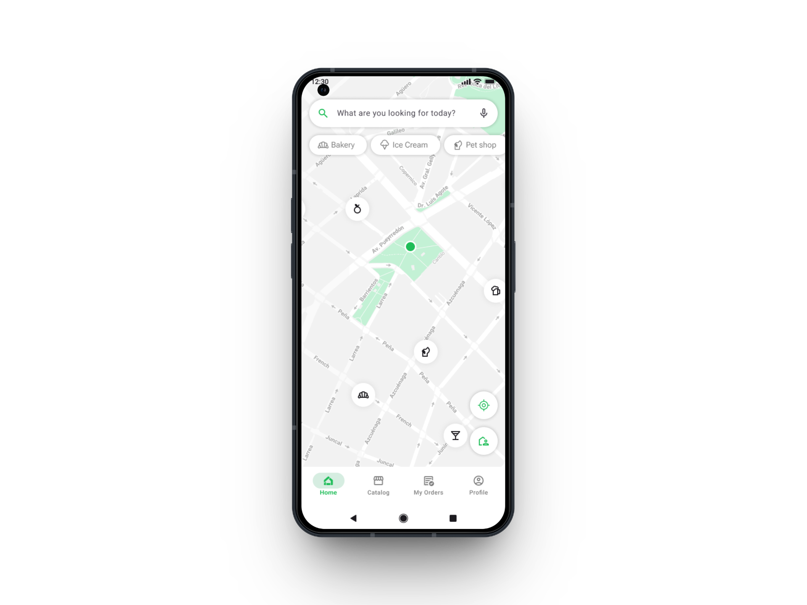
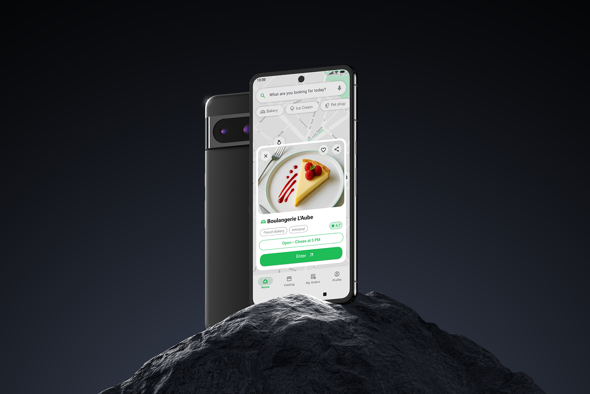
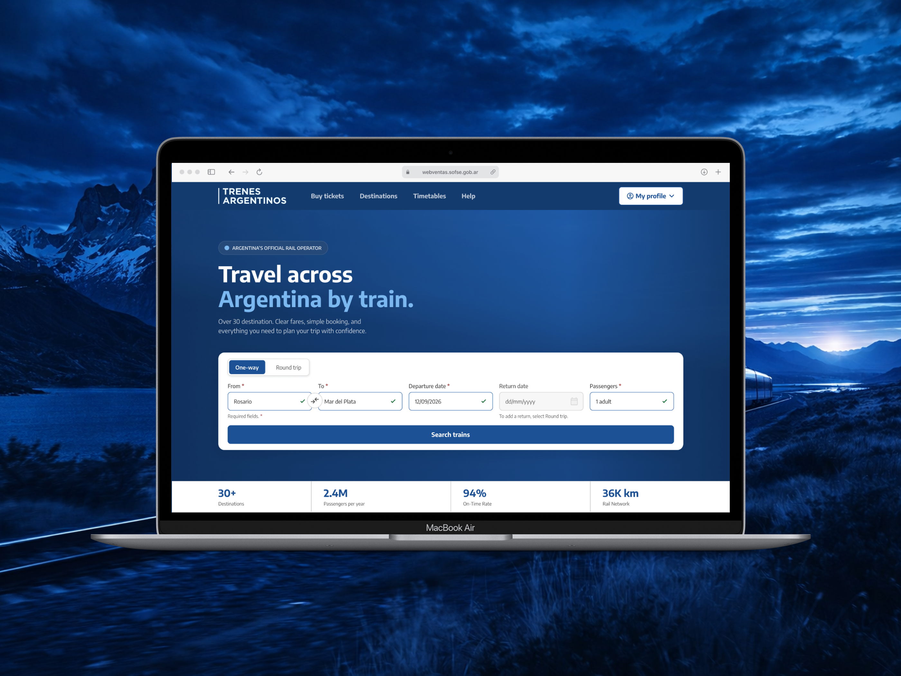

UX/UI design
focused on
people.
Hi, I’m Juan Martín Rossi, a UX/UI designer in continuous development. I enjoy creating digital experiences that are clear, functional, and truly useful for the people who use them.

About
Learning,
designing and growing.
I’m a junior UX/UI designer with training in interface design and user experience. I completed specialized courses where I developed real projects from research to final prototype.
I’m especially interested in user-centered design and the balance between functionality and aesthetics. I work with Figma, understand accessibility principles, and enjoy the iterative nature of the design process.
UX/UI Training
I studied UX/UI design through project-based courses covering research methods, interface design, and prototyping.
App Project
Tazy App design: research, user flows, wireframes, and a high-fidelity prototype built in Figma.
Website Redesign
A redesign proposal for Trenes Argentinos with a focus on accessibility and clearer user journeys.
Projects
Two projects,
many design decisions.
Each one started as a course project, but I approached them as if they were for a real client: with research, justified decisions, and polished delivery.

App · FigmaTazy App
UX/UI design for a local shopping app. I worked on user research, information architecture, user flows, and a high-fidelity prototype. The main focus was reducing friction across the experience.
View case study
Web · RedesignTrenes Argentinos
A redesign proposal for the Trenes Argentinos digital experience. I focused on accessibility, simplifying key tasks, and improving visual consistency throughout the flow.
View case studyTools and methods I work with
What I offer
Design from
start to finish.
I can support the full UX/UI design process, from understanding the problem to preparing assets and design files for development.
UX Research
Interviews, surveys, and context analysis to understand users before designing.
Wireframes & Flows
I structure navigation and user journeys before moving into visual design.
UI Design in Figma
Clean and consistent interfaces with reusable components and a defined visual system.
Prototyping
Interactive prototypes that can be tested before a single line of code is written.
Accessibility
Design that respects WCAG principles, including contrast, hierarchy, and inclusive flows.
Developer Handoff
Figma delivery with specifications, tokens, and documentation ready for the technical team.
How I work
My process,
step by step.
I don’t improvise. Every design decision has a reason behind it: data, context, or real user insights.
Discovery
I start by understanding the business, the user, and the context. Questions come before solutions.
Research
Interviews, benchmarking, and analysis to support design decisions with evidence.
Structure & Flows
Information architecture, user journeys, and low-fidelity wireframes.
UI Design
Visual interfaces with a component system and an interactive prototype built in Figma.
Testing & Iteration
Usability testing, feedback-based adjustments, and continuous refinement of the experience.
Delivery
Complete handoff with specifications, exported assets, and supporting documentation.
Let’s work together
I’m available
for collaboration.
If you have a project, an idea, or want to work with a junior designer who is eager to learn and contribute, feel free to reach out. I’d be happy to talk.
Get in touch →